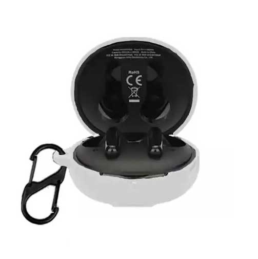

راهنمای خرید کاور برای کیس QCY T13 ANC2
مقایسه دو لینک کاور سیلیکونی برای کیس QCY T13 ANC2؛ سازگاری، فیت و نکات خرید اکسسوری.
آخرین بازبینی: ۲۶ مهر ۱۴۰۵ · تحریریه سنجو
این مدل را پسندیدی؟ قبل از ادامه قیمت امروز را ببین
موجودی، فروشنده و گارانتی ممکن است تغییر کند؛ صفحه فروشگاه را برای شرایط همین لحظه بررسی کن.
لینک همکاری در فروش است؛ برای خریدار هزینه اضافه ایجاد نمیکند.
دو فرم کاور را قبل از خرید ببین
تصاویر مرجعاند؛ تطابق دقیق همان آگهی فروشگاه را قبل از خرید بررسی کن.

نمونه ظاهری گزینه ۱
کاور روشن با حلقه حمل؛ ظاهر و برش درگاه را با آگهی نهایی تطبیق بده.
مشاهده قیمت گزینه ۱
نمونه ظاهری گزینه ۲
نمونه رنگهای مختلف کاور؛ برند و رنگ موجود را در همان صفحه فروشگاه تأیید کن.
مشاهده قیمت گزینه ۲این محصول برای چه کسی منطقیتر است؟
اگر کیس هدفونت زیاد داخل کیف یا جیب حمل میشود و خطوخش برایت مهم است، کاور سیلیکونی میتواند اکسسوری ساده و کمریسکی باشد.
این مدل در فهرست بررسی فعلی سنجو قرار گرفته، اما رتبه فروش یا محبوبیت بهتنهایی دلیل کافی برای خرید نیست. نیاز واقعی، موجودی پایدار، گارانتی و اختلاف قیمت را همزمان بسنج.
قبل از خرید چه چیزهایی را بررسی کنیم؟
- تطابق دقیق با نسخه T13 ANC2 و محل درگاه شارژ
- لق نبودن کاور و بازشدن راحت درِ کیس
- ضخامت و تأثیر روی حمل روزانه
- وجود حلقه یا بند فقط در صورت نیاز واقعی
چه زمانی سراغ گزینه دیگری برویم؟
اگر کیس را بیشتر در خانه استفاده میکنی یا ضخامت اضافه آزاردهنده است، خرید کاور ضروری نیست.
جمعبندی ارزش خرید
برای اکسسوری، سازگاری دقیق مهمتر از ظاهر است؛ هر دو گزینه را بر اساس فیت، دسترسی به پورت و قیمت نهایی مقایسه کن.
قیمت و موجودی امروز
قیمت و موجودی ثابت نیست. قبل از خرید، فروشنده، گارانتی، محتویات بسته و شرایط ارسال را دوباره بررسی کن.
این صفحه شامل لینک همکاری در فروش است؛ استفاده از لینک برای خریدار هزینه اضافه ایجاد نمیکند و ممکن است سنجو از خرید واجد شرایط کمیسیون دریافت کند.
پرسشهای رایج
آیا کاور کیس QCY T13 ANC2 برای همه بهترین انتخاب است؟
نه. انتخاب مناسب به بودجه، نوع استفاده و اولویتهای تو بستگی دارد. سنجو این مدل را برای مقایسه هدفمند معرفی میکند، نه بهعنوان برنده مطلق.
آیا قیمت درجشده در فروشگاه ثابت است؟
خیر. قیمت، موجودی، فروشنده و شرایط گارانتی میتواند تغییر کند؛ اطلاعات نهایی را در صفحه فروشگاه بررسی کن.